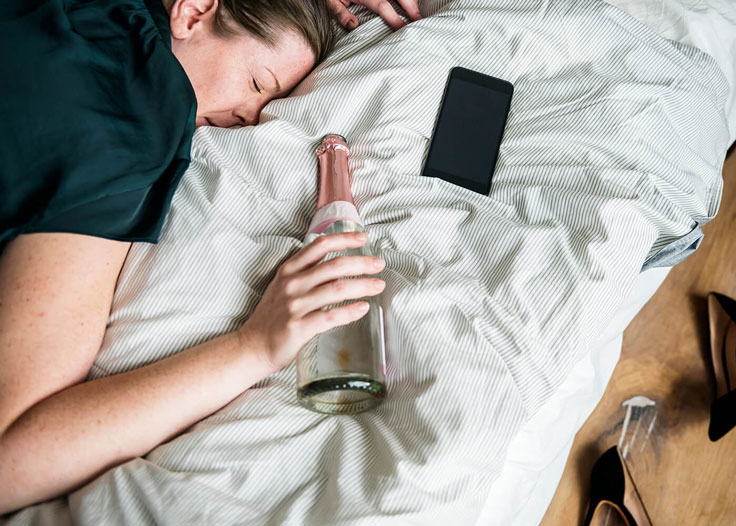
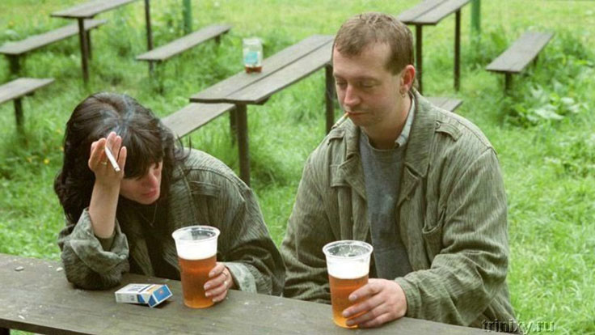
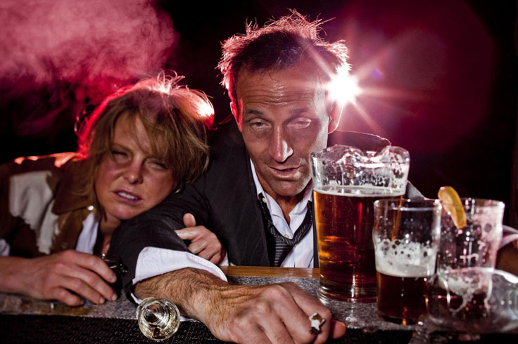

Moje láska se změnila hroznou katastrofu. Příčinou mého žívotního neštěstí byl alkohol.“ In vino veritas,“ - staré přísloví Římanů. Což znamená:„ve víně je pravda.“. Ale ve víně jsem našel jen neštěstí. Zbývá se mi jen teď vyprávět vám o svém žívotním příběhů abyste mohly udělát z toho závěr a nezopakovát moje chyby. A díky Bohu se mi podařilo najít vhodný lék a zbavit se alkoholismu.
Vzpomínám si na náš předposlední večer. Moje milovaná žena lehla vedle mě a přitulila se ke mně, ala jsem chtěl utéct. Pak jsem se už rozhodl, že je mezi námi konec. Byl to další večer když jsem byl strašně opilý. Jako vždy, jsem si namíchal všechno co se dálo: drahý koňak, levné červené víno a levný vermut. To vše se přemichalo ve vzduchů a vytvořilo nechutný zápach výparů které otrávovaly vzduch v ložnici a náš vztah.

Setkali jsme se náhodně - na Silvestra. Vždy jsem věřil v novoroční zázraky a viděl jsem v tom dobré znamení. Nikdy jsem si nemohl představit, že osud mě dá pod stromeček nelečitelnou závislost na alkoholu.
Pocit osamělosti už v tu dobu jsem měl chronický. Úplně jsem se pustil do práce a můj život se rychle změnil – pracovál jsem od nevidím do nevidím. Občas jsem měl služební cestu až na měsíc do jiných měst. Můj život mě zkoušel, jak jsem odolný, a mě jako muži a skutečně jako osobě prostě chyběla alespoň trochu péče.
Předchozí vztah trval několik let, ale skončil se rozchodem. Tehdy jsem pohřbil svou lásku, už jsem si ji nepamatoval ani jsem si toho nelitoval. Prostě jsem žíl dál. Pak jsem se seznamil s ženou, jmenovala se Anna a byla o tři roky starší než já, což se mi líbilo. Jsme se rozpovídali a vyvinula se mezi námi vzájemná sympatie. Po několika měsících jsme začali žít spolu.
Nepovažovál jsem její závislost na alkoholu za tak závažný problém. Na procházkách ale jsme pořád jen pily pivo. Ona pořád měla v ruce plechovku piva, jednu pak druhou. Chlastala prostě jako chlap a začal jsem požívat alkohol spolu s ní. A myslel jsem si že to je úplně v pořádku, že to je jen počáteční fáze vztahu.

Když jsme začali žít spolu, požívali jsme alkohol dál. Všechno se pokračovalo ale trochu jiným způsobem: každý večer zněly fráze:„ Zlato, koupiš prosím víno? Červené prosím“; nebo: „ Dáme si pivo?“; „Miláčků, koupiš prosím nějaké alko?.
Každý večer jsme si dávali sklenicí nějakého alkoholu, a každé ráno jsem se probuzovál s kocovinou, měl jsem: bolesti hlavy, nevolností, výpadky paměti. Prášky na bolest hlavy mě ale nemohly nezachránit z pocitu hanby a už jsem si dával další porcí alkoholu. A moje partnerka také jen pila alkohol, měla špatnou náladu a kocovinu.
Tato situace mě začala velmi znepokojovát. V hlavě se mi točili dvě myšlenky - Musíme si promluvit, nějak s tím musíme zkončit “ a pak jsem si říkal„ Tak to projde, je to jen krátké žívotní období.“ Tak jsem si řekl, že fakt musíme něco v životě změnít. Už si nepamatují přesně jak jsem jí to řekl, ale bylo to něco podobného:
- Aničko, můžeme pít alkohol méně?“ řekl jsem.
Poté následovala hádka. „Nikdy nikdo v životě mi neříkal že jsem alkoholička!“- a dupla nohou. I když jsem to slovo ani neřekl. Řekla mi že: „Jsem dospělá a stejně jako každý dospělý člověk mám své vlastní potřeby. Mám právo na odpočinek, a můžu odpočívat tak jak uznám za vhodné.“ Upřímně vám řeknu, v tu chvíli jsem musel sebrát svoje věci a odejít pryč. Je to vždy lepší cesta než se hádat. Předtím jsme měli několik podobných konverzací, které vždy vedly k hádkám.
Jak je možné s tebou vůbec žít bez alkoholu? Není s tebou o čem ani mluvit,“ řekla se sklenicí v ruce.

Ale ona vždy měla co říct. A všechny její příběhy začaly, plus mínus stejné:„ Jsme s kamarádkou Klárou si koupili víno ... ;„ Sedíme v hospodě a pijeme pivo ... “; „Přišli jsme na pláž a dali jsme si….
A já jsem dělal to co ona. Jako alkoholici, jsme požívali litry vodky. Také v tom byl nějaký smysl na konci náročného pracovního dne. Nebylo to pro mě ani důležité, že kocovina mi obtěžovala další pracovní den.
Asi rok uplynul v podobném rytmu, který se mi zůstal v paměti jako zbytky nechutných vzpomínek. Ostatní vzpomínky byly vymazány alkoholem.
Uvědomění toho, že jsem na pokraji propasti mi přišlo velmi překvapivě, jako ta láska. A stalo se to v sobotu ráno, asi v pět hodin, když jsem se probudil ze strašné kocoviny, která mi bránila znovu usnout. Potom jsem spal 3-4 hodiny, a po probuzení svět se zdál nechutný a nepřátelský, a já jsem byl hrozný alkoholik. Všude kolem byla špína, rozhazené věci. Cítil jsem smrdlavy zápach. A vedle mě ležela chlupatá, oteklá žena se včerejším make-upem rozmazaným na její oteklé tváři a smradem z pusy.
A v tu chvíli jsem jasně pochopil jednu věc, že už se fakt musím zastavit. Ale chlastal jsem pivo dál, protože bez toho bych nevydržel. Anna se probudila a také hned šla za plechovkou.
Večer jsme měli schůzku s přáteli. Vlastně jsme do večera pili celý den. Pivo po ránu, a tak dále a tak dále.A večer jsme si dávali silnější alkohol.

Řekl jsem Anně, že chci žít jako normální člověk. Velmi ostře na to zareagovala: „nevíš kdo jsou to alkoholici “ ; „ já nepiju hodně “ ; „ jsme dospělé lidí a rozhodujeme si, jak budeme žít.
- Sám jsi alkoholik, tak si jdi léčit sám. Já to nepotřebuji,“ řekla na závěr
Už tu nebyla žádná láska Jsem si cítil z toho velmi špatně. Už jsem neměl žádnou touhu milovat ani naději do budoucna, a víru v zázrak. Anna mě jen dráždila a já jsem ji požádal, aby opustila můj byt a zmizela z mého života.
Plakala, kříčela, měla hysterický záchvat. Ale celé toto její divadlo mě bylo lhostejné. Křičení opilé ženy vypadalo hrozné a jediné, co jsem chtěl, zůstát se co nejdříve sam. Přesto se mi podařilo přesvědčil Annu, aby odjela ke své matce. Navždy.
Pokračoval jsem dál požívat alkohol sám. Pil jsem každý den bez přestávky čtyři měsíce, i přesto, že jsem si pořád sliboval:„ dnes je to naposledy. “Uvědomil jsem si: sám si nedokážu poradit a, že jsem nemocný a nevyléčím se z toho.
A pak jsem v neděli asi ve čtyři hodiny ráno probudil se s kocovinou. Cítil jsem si tak mizerně, že průjmy a zvracení jsem si ani nevšímal. Pak jsem zadál do Googlu: jak bojovát s alkoholismem“. Po rozkliknutí několika odkazů jsemse narazil na web léku . Na stránkách psali, že tento lék pomůže přestat pít v co nejkratším čase. A jeho výhodou je, že se skládá výhradně z přírodních složek, pozitivně působí na celý organismus otravený alkoholem a regeneruje poškozené orgány.

Tak to zkusím, možná je to pravda. Hůř už mi nic neudělá.,-řekl jsem si, a objednal několik balíčků tohoto produktu. Za pár minut mi zavolal operátor zpět a potvrdil jsem svoji objednávku.
Do té doby, až jsem měl balíček s , pokračoval jsem pít alkohol dál. Ale když jsem ten lék dostal, okamžitě jsem ho začal brát. Prvních pár dní jsem nic nepocítil ... touha po alkoholu se u mě zůstala, ale snažil jsem se vydržet. Přiznám se, že několikrát došlo k tomu, že jsem nemohl vydržet.
A po týdnu to vypadalo, že už je mi líp. Psychická závislost na alkoholu už mi přešla. Přestal jsem být otrokem lahve, večer už jsem alkohol nemusel a ráno už nebylo spojeno s bolestí hlavy a nevolností. . Ale jak bylo řečeno v příbalovém letáků k , - je to pouze první fáze léčby. V žádném případě bych neměl přestat užívat lék, takže jsem pokračoval v léčbě podle pokynů.
Postupně moje přátelé - alkoholici mizeli z mého života. Už jsme prostě neměli důvod kamarádit. Tak jsem měl v okolí lidí s jinými zájmy.
Od té doby uplynulo 1,5 roku a můj život se dramaticky změnil. Seznamil jsem se s jinou, slušnou holkou, se kterou večer koukáme na filmy, společně vaříme, chodíme do kina – a celkem spolu skvěle, trávíme čas. A ta noční můra a alkoholismus stal pro mě jako špatný sen.
Rozhodl jsem se tento příběh sdílet, protože věřím, že moje špatná zkušenost s alkoholem může být užitečná i pro ostatní lidi, kteří mají sklon zneužívat alkohol. je to nejlepší, co se mnou stálo v životě a co mě zachránilo od smrtí. Lidé, přestaňte! Alkohol zabíjí. Život je krásný a abyste viděli jak je krásný, musíte se vzdát svých destruktivních návyků. A někdy se i zbavte lidí, kteří na vás mají destruktivní vliv.
Níže nechávám odkaz na web kde si můžete objednat . Mimochodem, teď to tam prodávají ve slevě. Pospěšte si.